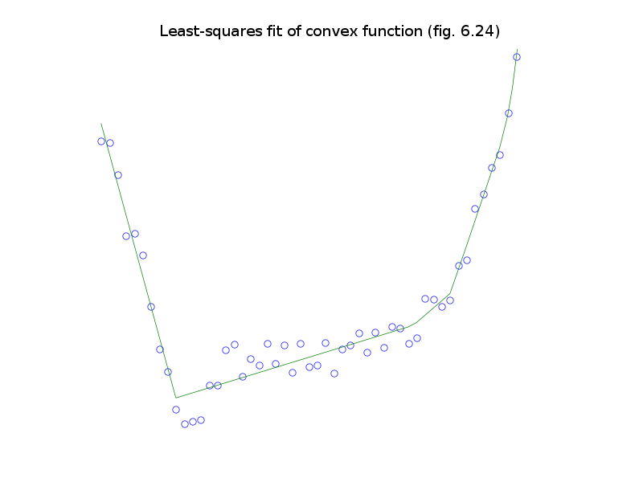

source code, data file (cvxfit.bin)
# Figure 6.24, page 339.
# Least-squares fit of a convex function.
from cvxopt import solvers, matrix, spmatrix, mul
from pickle import load
solvers.options['show_progress'] = 0
data = load(open('cvxfit.bin','rb'))
u, y = data['u'], data['y']
m = len(u)
# minimize (1/2) * || yhat - y ||_2^2
# subject to yhat[j] >= yhat[i] + g[i]' * (u[j] - u[i]), j, i = 0,...,m-1
#
# Variables yhat (m), g (m).
nvars = 2*m
P = spmatrix(1.0, range(m), range(m), (nvars, nvars))
q = matrix(0.0, (nvars,1))
q[:m] = -y
# m blocks (i = 0,...,m-1) of linear inequalities
#
# yhat[i] + g[i]' * (u[j] - u[i]) <= yhat[j], j = 0,...,m-1.
G = spmatrix([],[],[], (m**2, nvars))
I = spmatrix(1.0, range(m), range(m))
for i in range(m):
# coefficients of yhat[i]
G[list(range(i*m, (i+1)*m)), i] = 1.0
# coefficients of g[i]
G[list(range(i*m, (i+1)*m)), m+i] = u - u[i]
# coefficients of yhat[j]
G[list(range(i*m, (i+1)*m)), list(range(m))] -= I
h = matrix(0.0, (m**2,1))
sol = solvers.qp(P, q, G, h)
yhat = sol['x'][:m]
g = sol['x'][m:]
nopts = 1000
ts = [ 2.2/nopts * t for t in range(1000) ]
f = [ max(yhat + mul(g, t-u)) for t in ts ]
try: import pylab
except ImportError: pass
else:
pylab.figure(1, facecolor='w')
pylab.plot(u, y, 'wo', markeredgecolor='b')
pylab.plot(ts, f, '-g')
pylab.axis([-0.1, 2.3, -1.1, 7.2])
pylab.axis('off')
pylab.title('Least-squares fit of convex function (fig. 6.24)')
pylab.show()